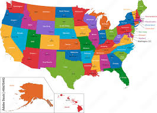

I asked if Check Cynder's playlist new additions (psycho, freak me out) were about me, of course they were not ahah!
Olivia talked to me about the unlucky times when she was homeless (but not in the streets!) and the moment when spiritual entities had an impact on Olivia's life.
Olivia and I talked about her love for free spirited people that are trapped. She seems to only be able to care for them and noone else.
We also talked about our abilities to appear in mindscape or being imposed. She can imagine Cynder pretty well but has problems animating her.
It's been for a few days now that Amy has had pain in the back. I hope she'll be okay soon. We didn't want to watch christmas movies because of that.
Amy shared with me an FF14 music remixes playlist she likes and that just came out.
The playlist on youtube
Her favorite is the first one, "Rise". It's catchy. I love the seventh, And 7 is (a remix of) Beauty's Wicked Wiles, the theme for Lakshmi.
I heard Olivia's voice for the first time today !
We talked about Me to our therapist Nicolas. It wasn't the first time we talked to him about me, but he seemed really interested about our synergy and how we both felt like I was part of imagination yet felt real.
The intern nurse told us about some easy Physical exercises we could do at home. We think we are going to try them, we'd love to lose some weight.

During the night Olivia and I talked about the idea of visiting the USA to see her and Amy. She listened to my playlist and liked it !
With Amy we talked about how it would be weird for her to see Antoine in her house as she doesn't really know him, but she would still enjoy the visit. So we decided that Amy and Antoine should talk a little more together, and had the idea of having Antoine play FF14 of NA servers with Amy.
Antoine's little brother Gaellen came back from his long trip to Switzerland. We all had Raclette with Antoine's dad, Melisande, Gaellen and Bernardino; Antoine really liked it.
Olivia and I talked about our sexual interests during the night. I told her I could have some very mild humorous SM feelings like tying someone up to tickle them, that could lead into more wholesome hugging and things like that. During that discussion I could feel she was being overprotective of me because I did tell her in the past I might be Ace. She said she had two modes, one receiving and one giving, and that with me she would probably be more into giving. Though i'm not sure myself about that.
She likes wholesome yet vulgar and lustful things, but when she gives it to people she likes it to be humorous.
Amy and I watched "The Bishop's Wife"! It was rather funny. It was about an angel going to help a family. The bishop was neglecting his wife to build a cathedral, and the angel kind of fell in love with her, but in the end he fixes their marriage.
Antoine forgot his headset at the castle but Sylvain lent him another one.
Olivia and Me talked about a video that was about autism and schizophrenia. It was telling that autists have a vertical kind of thinking, building really specialized kind of things, while schizos were linear and thought about a lot of things and their links together. It was also pointing at schizautism, people that were specialized in building complete things really linked together. It feels like Antoine kind of had linear thinking, but evolved it into parallel thinking, where he linked multiple things that were having the same patterns and thinking about them all at one time, maybe that counts.
After that I kind of let Antoine talk to her through me. He checked if we were compatibles on our bizarreries, and somehow, both her& and us are really compatible.
Vlad and Cynder broke up. Then Cynder and Antoine are in tryout for dating now ! I just hope she doesn't just need a replacement and that they really like each other ! If everything goes well it would be like our systems are dating !
Antoine and Cynder talked about sex today, Antoine seemed to mean he was a little shy, while Cynder is more kinky. She didn't seem to be annoyed by that !
Holidays went well ! We didn't Watching a lot of Christmas Movies in December with Amy, and I kind or broke to her because of how Olivia's relationship with me was going on way too fast than with her, but she reassured me, kinda.
We went to Antoine's dad castle for Christmas, it was nice. We did new year's eve at Sylvain's we ate snails.